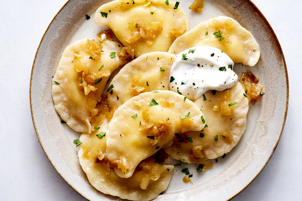

Pierogi

How To Make Pierogi
A classic Polish comfort food, Pierogi are easy to make as well as delicious. Use this recipe to create this class peasant's dish!
Ingredients
- 2 cups all purpose flour
- 1 teaspoon kosher salt
- 3 tablespoons unsalted butter
- 1 large egg, beaten
- 1/2 pound all-purpose potatoes
- 3 tablespoons unsalted butter
- 3 medium yellow onions, finely chopped
- 1/2 quark cheese
Directions
-
Add flour and salt to a large bowl and combine
-
Peel potatoes and cut into 1 inch cubes. Add to a large pot and boil for 25 minutes.